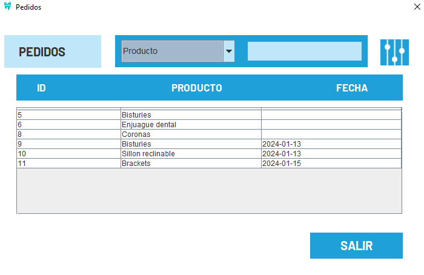
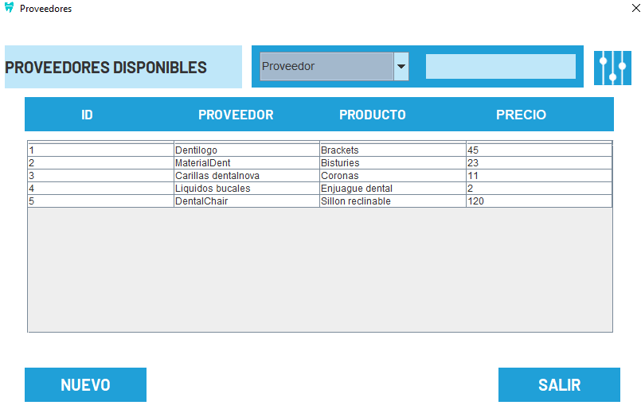
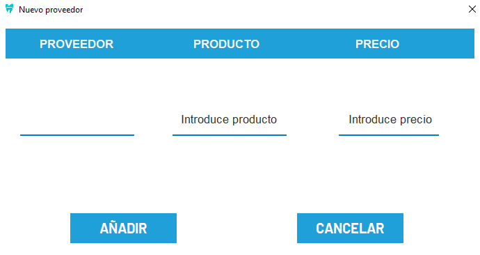
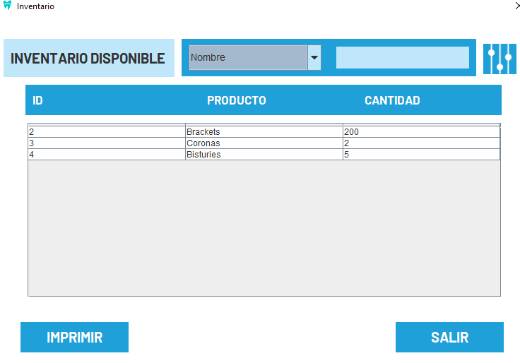
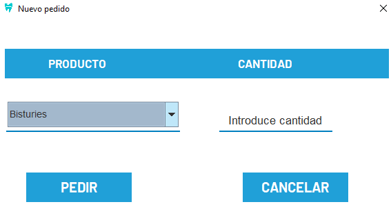
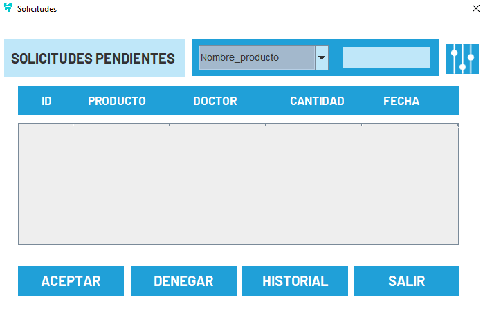
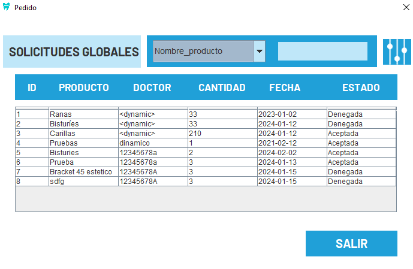

Al acceder, se verán todos los pedidos realizados, dentro de una tabla, los mismos pedidos podrán ser filtrados por varios campos.
En esta sección, encontrará información sobre los proveedores de material. Puede explorar la tabla y utilizar un buscador para encontrar proveedores específicos, de todas formas en caso de necesitar añadir, también se podrá mediante el botón "Nuevo". El mismo solicitará el proveedor, el producto ofrecido y el precio del mismo.
Para añadir un nuevo proveedor:
Visualización del inventario de material, con detalles sobre la cantidad disponible, estado, etc. Podrá imprimir la cantidad de productos en el botón de nombre homónimo.
Para realizar un nuevo pedido, se abre un cuadro de diálogo, en el que se solicitan productos a los proveedores disponibles . Podrá elegir la cantidad a pedir.
En esta sección, encontrará las solicitudes de material pendientes. Puede revisar la información detallada y tomar las acciones necesarias para cada solicitud:
Podrá aceptarlas (eso crea un pedido) o denegarlas. De todas formas, podrá ver las solicitudes totales en historial:
